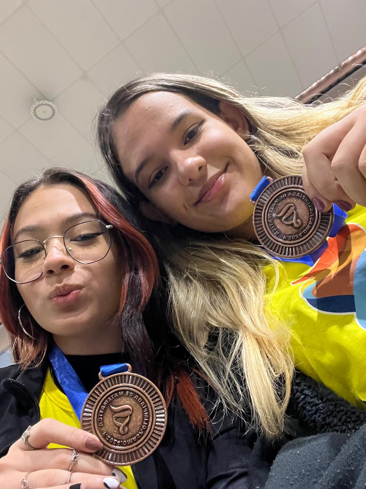

No meu segundo ano do ensino médio, ganhei medalha de bronze na olimpíada de matemática OMASP, junto com minha amiga.
Também entrei na ETEC no período noturno para me aprofundar ainda mais na área de Desenvolvimento de Sistemas.

Som de fundo: